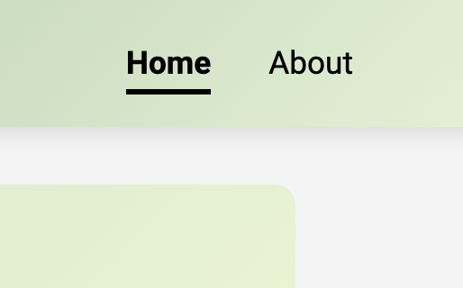
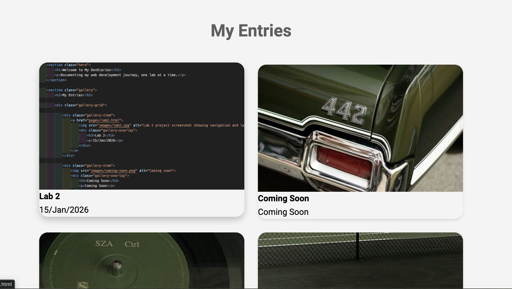
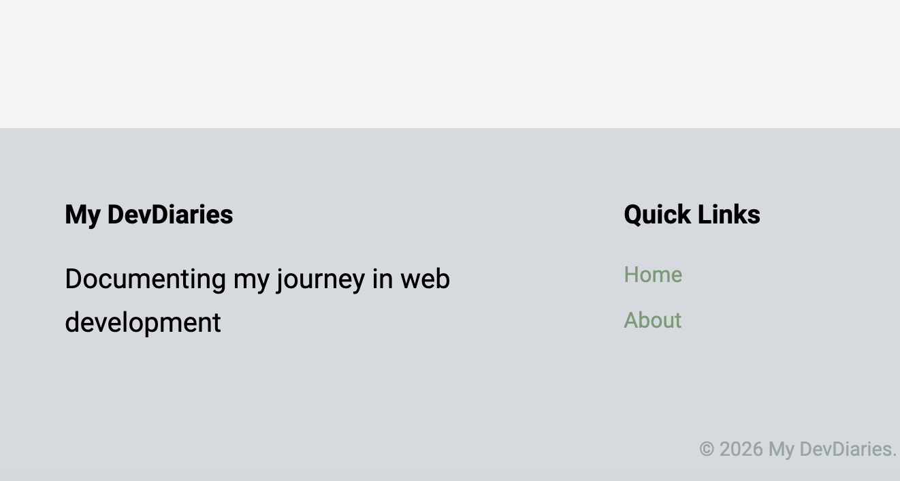

Lab 2
15/January/2026
What I Learned
CSS Layout Techniques
In this lab, I explored two powerful CSS layout systems:
- Flexbox - Perfect for one-dimensional layouts like navigation bars
- CSS Grid - Ideal for two-dimensional layouts like image galleries
Responsive Design
I learned how to make websites adapt to different screen sizes using media queries. This ensures my site looks great on phones, tablets, and desktops.
Project Screenshots



Reflection
In this lab, I learned many new things, including creating an interactive gallery grid and designing for accessibility. The most interesting thing I learned was the principles of accessibility in web design and development. As someone who has not previously had to use accessible tools on the web, I found it fascinating to learn about how accessible tools work, especially screen readers, which I had never previously used before this lab. During the lecture, I found the discussion about how accessibility should be considered at all stages of the design process to be very important. This reminded me of a book I had read for an undergraduate English course called “Falling for Myself”, a memoir by Dorothy Ellen Palmer, who grew up with a disability and grew to embrace it. She now advocates for accessibility and disability justice. Today’s class reflected many of the experiences outlined in the book, such as the experience of disabled individuals having to live in a world that is primarily designed for able-bodied people. I appreciated the discussion of this important topic, as it reminded me that I, as a designer, have the ability to make the world more inclusive and accessible through my design decisions. During this week’s lab, the concept that I found most difficult to understand and visualize was designing the grid layout and spacing. I felt that I never really understood what I was doing until I saved my code and then viewed the site. I think that this will take more time and practice for me to fully understand as I continue to grow in my web development journey. One surprise “aha” moment that I needed to work through was an issue where I could not get my gallery images to have rounded corners. I was frustrated because I had copied the code exactly and could not figure out what was going on. I decided to try using an AI tool (Co-Pilot) to try and help me figure out what was wrong with my code. It turns out that I had accidentally copied and pasted the header “css” before my gallery formatting, which can alter the activity of what comes below it. After removing this, my gallery had rounded corners as expected. I found this to be a helpful use of an AI tool, as the AI was able to explain to me what was wrong and why. Otherwise, I had no other challenges building my site. I’m looking forward to continue building this site with future labs.